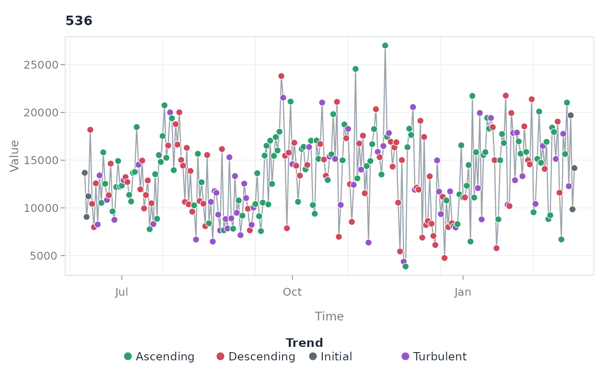
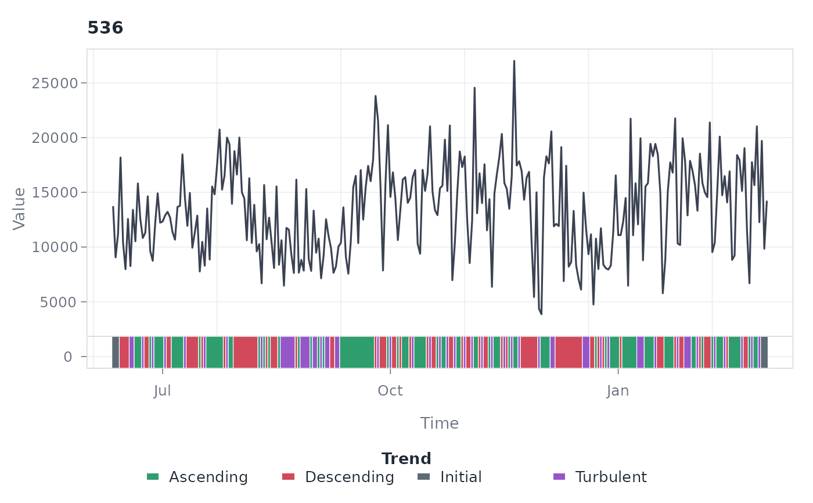
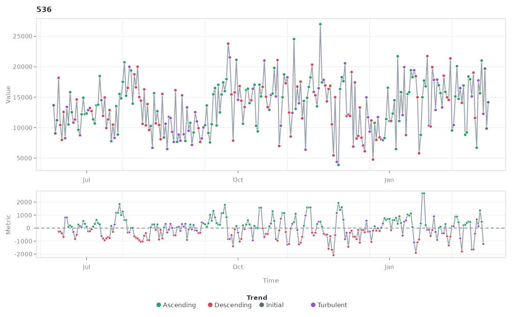
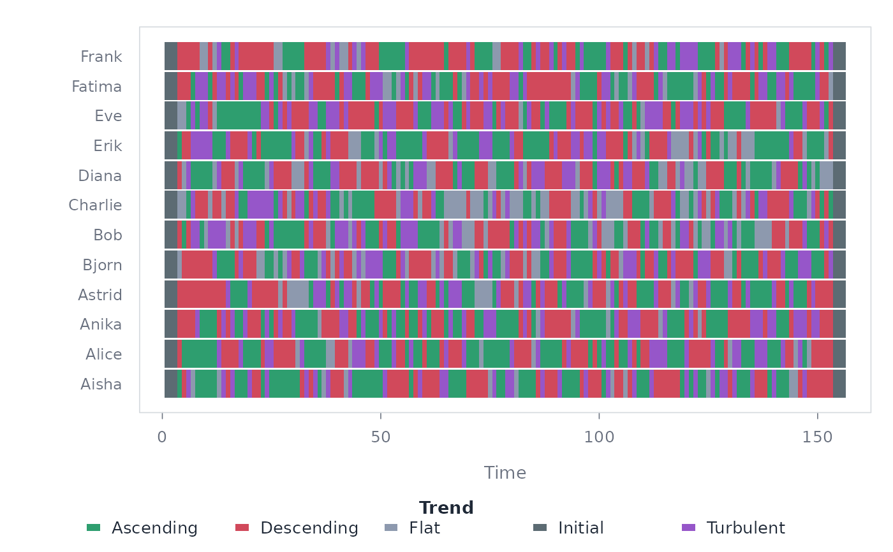

Four views of a trend classification, selected with type. "points"
(default) draws each series with observations coloured by trend state;
"ribbon" runs the trend classification as a strip underneath the clean
series line; "heatmap" draws one row per series with one coloured tile
per observation, comparing trend timing across many series; "panels"
stacks each series above its rolling trend metric (the slope or
correlation trend() classified on) so a state change can be read
against the metric that produced it.
Usage
# S3 method for class 'tsn_trend'
plot(
x,
type = c("points", "ribbon", "heatmap", "panels"),
series = NULL,
max_series = NULL,
columns = NULL,
palette = NULL,
line_color = "#9AA3AD",
line_width = 1.3,
point_size = 1.05,
strip_height = 0.1,
sort = "none",
border = FALSE,
flat_band = TRUE,
legend = TRUE,
xlab = "Time",
ylab = "Value",
cex = 1,
grid = TRUE,
background = "#FFFFFF",
...
)Arguments
- x
A
tsn_trendresult.- type
The view:
"points","ribbon","heatmap", or"panels".- series
Optional character vector of series IDs to display.
- max_series
Maximum number of series to draw (
25for the heatmap,4for the panel view,10otherwise).- columns
Number of panel columns.
- palette
Optional named colours overriding individual trend states (e.g.
c(Ascending = "forestgreen")).- line_color
Series line colour.
- line_width
Series line width.
- point_size
Observation point size.
- strip_height
Ribbon strip height as a fraction of the panel.
- sort
Heatmap row order:
"none","mean", or"state".- border
Whether heatmap tiles carry a thin separator border.
- flat_band
For
type = "panels", shade theepsilonflat band on the metric panel so the classification threshold is visible.- legend
Whether to draw the legend row.
- xlab, ylab
Axis titles.
- cex
Global text size multiplier.
- grid
Whether to draw the background grid.
- background
Panel background colour.
- ...
Reserved for future options.
Examples
data(steps)
complete <- subset(steps, !is.na(steps))
classified <- trend(
complete,
value = "steps", id = "id", time = "day", window = 7
)
plot(classified, series = "536")

plot(classified, "ribbon", series = "536")

plot(classified, "panels", series = "536")

plot(classified, "heatmap", max_series = 12)
